操作系统 from 蒋炎岩nju2023
注意：本页面停止更新，后续内容更新在我的notion笔记：操作系统 (notion.site)
2023年6月29日，by:HUII
概述
本课程来源于南京大学计算机软件研究所的jyy老师。绿导师原谅你了的个人空间_哔哩哔哩_bilibili
课程资料官网：操作系统：设计与实现 (2023 春季学期) (jyywiki.cn)
操作系统课程
去年（2022）就尝试看完jyy老师的课程，但最终没能成功😅，希望今年能够尽量跟上jyy老师的进度。
失败了
绪论1_操作系统概述_2023.2.14
Why为什么学操作系统
- 觉醒体内“编程能力”
- 补完编程技能体系
What什么是操作系统
Operating System: A body of software, in fact, that is responsible for making it easy to run programs (even allowing you to seemingly run many at the same time), allowing programs to share memory, enabling programs to interact with devices, and other fun stuff like that. (OSTEP)
让程序可以与其它程序以及硬件交互
什么是操作系统
操作系统：硬件和软件的中间层
Fortran卡片
历史：
ENIAC: 1946.2.14
1940s
- 硬件
- 逻辑门：真空电子管
- 存储器：延迟线 (delay lines)
- 输入/输出：打孔纸带/指示灯
软件：打印平方数、素数表、计算弹道……
操作系统：没有
- 程序直接用指令操作硬件
- 不需要画蛇添足的程序来管理它
- 硬件
1950s
- 硬件：更快更小的逻辑门 (晶体管)、更大的内存 (磁芯)、丰富的 I/O 设备
- I/O 设备的速度已经严重低于处理器的速度，中断机制出现 (1953)
- 软件：更复杂的通用的数值计算。自然科学、工程机械、军事……对计算机的需求暴涨
- 高级语言和 API 诞生 (Fortran, 1957)：一行代码，一张卡片
- 80 行的规范沿用至今 (细节：打印机会印刷本行代码)
- 操作系统：库函数 + 管理程序排队运行的调度代码。
- 写程序 (戳纸带)、跑程序都是非常费事的
- 计算机非常贵 ($50,000−$1,000,000$50,000−$1,000,000)，一个学校只有一台
- 算力成为一种服务：多用户轮流共享计算机，operator 负责调度
- 操作 (operate) 任务 (jobs) 的系统 (system)
- “批处理系统” = 程序的自动切换 (换卡) + 库函数 API
- Disk Operating Systems (DOS)
- 操作系统中开始出现 “设备”、“文件”、“任务” 等对象和 API
- 写程序 (戳纸带)、跑程序都是非常费事的
- 硬件：更快更小的逻辑门 (晶体管)、更大的内存 (磁芯)、丰富的 I/O 设备
1960s
- 硬件：集成电路、总线出现
- 更快的处理器
- 更快、更大的内存；虚拟存储出现
- 可以同时载入多个程序而不用 “换卡” 了
- 更丰富的 I/O 设备；完善的中断/异常机制
- 软件：更多的高级语言和编译器出现
- COBOL (1960), APL (1962), BASIC (1965)
- Bill Gates 和 Paul Allen 在 1975 年实现了 Altair 8800 上的 BASIC 解释器
- COBOL (1960), APL (1962), BASIC (1965)
- 操作系统：能载入多个程序到内存且调度它们的管理程序。
- 为防止程序之间形成干扰，操作系统自然地将共享资源 (如设备) 以 API 形式管理起来
- 有了进程 (process) 的概念
- 进程在执行 I/O 时，可以将 CPU 让给另一个进程
- 在多个地址空间隔离的程序之间切换
- 虚拟存储使一个程序出 bug 不会 crash 整个系统
- 操作系统中自然地增加进程管理 API
- 既然可以在程序之间切换，为什么不让它们定时切换呢？
- Multics (MIT, 1965)：现代分时操作系统诞生
- 为防止程序之间形成干扰，操作系统自然地将共享资源 (如设备) 以 API 形式管理起来
- 硬件：集成电路、总线出现
1970s+
- 硬件：集成电路空前发展，个人电脑兴起，“计算机” 已与今日无大异
- CISC 指令集；中断、I/O、异常、MMU、网络
- 个人计算机 (PC 机)、超级计算机……
- 软件
- PASCAL (1970), C (1972), …
- 今天能办到的，那个时代已经都能办到了——上天入地、图像声音视频、人工智能……
- 个人开发者 (Geek Network) 走上舞台
- 操作系统：分时系统走向成熟，UNIX 诞生并走向完善，奠定了现代操作系统的形态。
- 1973: 信号 API、管道 (对象)、grep (应用程序)
- 1983: BSD socket (对象)
- 1984: procfs (对象)……
- UNIX 衍生出的大家族
- 1BSD (1977), GNU (1983), MacOS (1984), AIX (1986), Minix (1987), Windows (1985), Linux 0.01 (1991), Windows NT (1993), Debian (1996), Windows XP (2002), Ubuntu (2004), iOS (2007), Android (2008), Windows 10 (2015), ……
- 硬件：集成电路空前发展，个人电脑兴起，“计算机” 已与今日无大异
今天的操作系统
- 通过 “虚拟化” 硬件资源为程序运行提供服务的软件。
How怎样学操作系统
课程代码
模拟数字系统
- seven-seg.py
1 | import fileinput |
- logisim.c
1 | #include <stdio.h> |
- Makefile
1 | a.out: logisim.c |
- 编译
在当前目录下执行make
- 运行
在当前目录下执行make run或./a.out | python3 seven-seg.py。
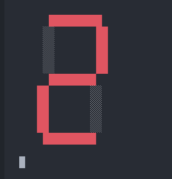模拟数字系统运行结果
模拟 RISC-V 指令执行
这里解决了一个鸡兔同笼问题
- jitu.txt
1 | 00050713 |
- uncore.c
1 | static inline bool inst_fetch(inst_t *in) { |
- rvemu.c
1 | #include <stdio.h> |
- Makefile
1 | a.out: rvemu.c uncore.c |
- 编译
在当前目录下执行make
- 运行
在当前目录下执行make run。
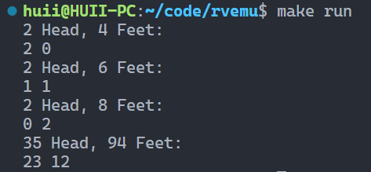模拟 RISC-V 指令执行
绪论2_应用视角的操作系统_2023.2.16
汇编代码和最小可执行文件
构造最小的 Hello, World “应用程序”
编译完成后文件大小为16KB。
1 | #include <stdio.h> |
使用objdump工具查看汇编代码objdump -d a.out | less。
使用静态文件进行编译，gcc hello.c -static，编译完成后大小为880kb，查看行数，objdump -d a.out | wc -l，共154193行。
打开gcc的日志功能gcc hello.c -static --verbose，可以打印出编译时的运行日志。
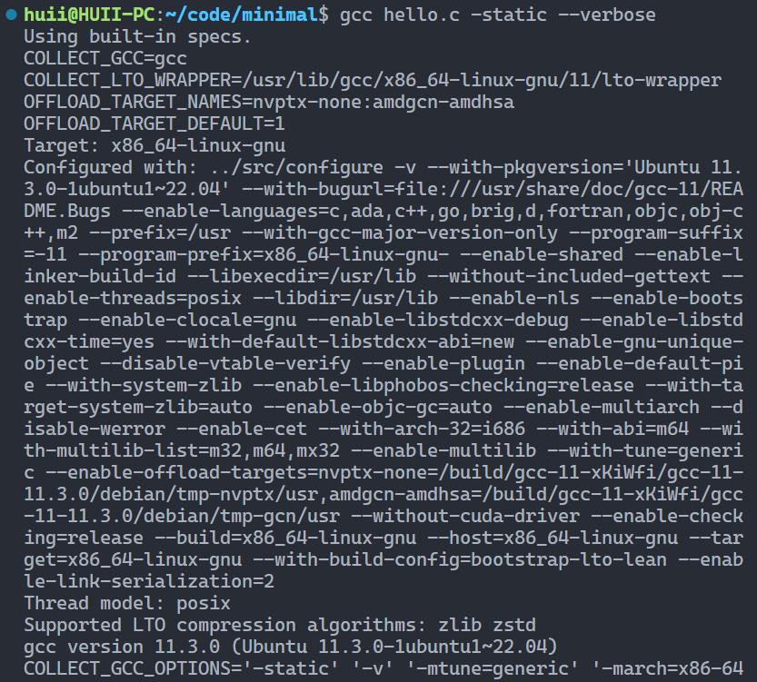gcc运行日志
编译过程：.c(源代码)->.i(预编译源代码)-gcc->.S(汇编代码)-as->.o-ld->a.out
打印链接选项gcc hello.c -static -Wl,--verbose。可以看到它链接了很多东西。
强行构造最小的 Hello, World？
使用gcc -E hello.c可以看到预编译结果。
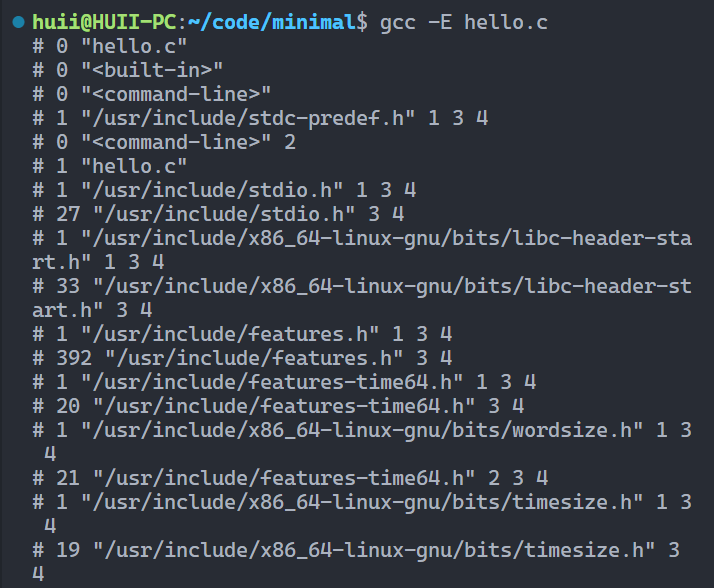预编译结果（部分）
使用gcc -c hello.c生成hello.o,使用objdump -d hello.o查看内容。
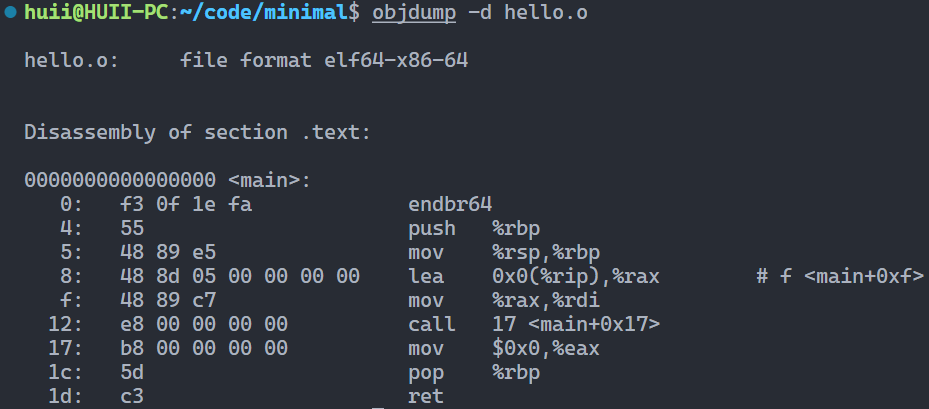查看内容
使用ld命令强行链接，ld hello.o，会出现一个warning和一个error。
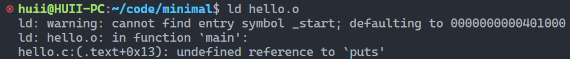强行链接结果
去除外部依赖，重新编译。
1 | #include <stdio.h> |
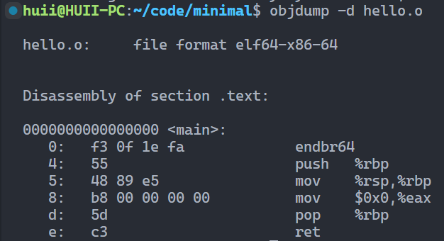查看内容
链接后只存在一个warning，可以使用ld hello.o -e main强行消除警告。
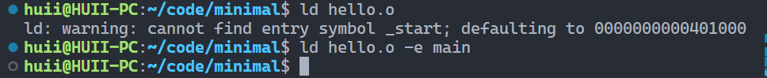链接警告
使用objdump查看。
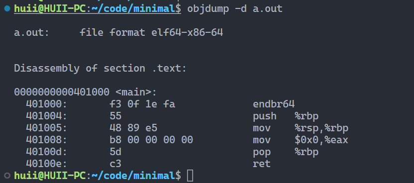最小a.out
不过运行存在错误。
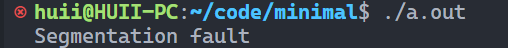运行提示Segmentation fault
将代码改为死循环，程序可正常运行。
 改为死循环
改为死循环
为什么会 Segmentation Fault？
使用调试器gbd工具进行调试，gdb a.out。
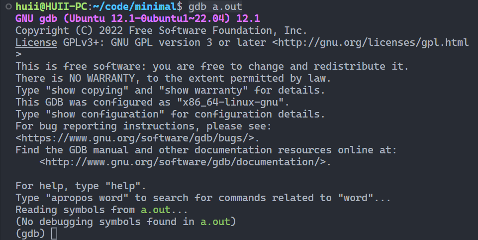启动gdb
（在gdb中）执行starti程序将从指令第一条开始执行。使用layout asm可以将汇编显示在界面上方（text ui）。
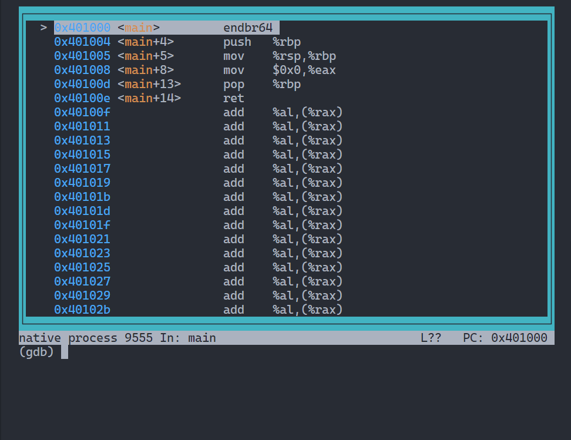text ui
使用info registers查看寄存器状态。
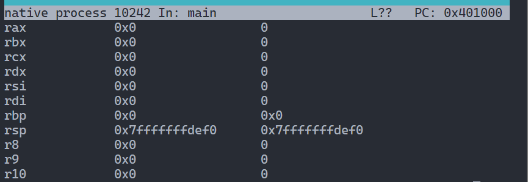寄存器状态
通过 调试可以看到，是在返回时出现错误，最后指到了0x00000001地址。
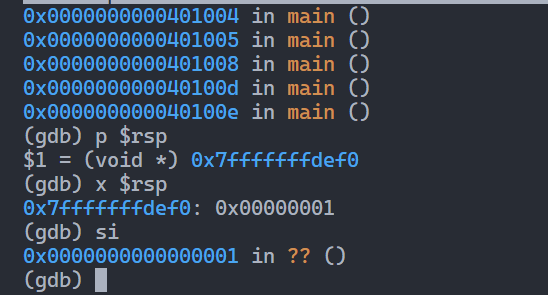返回时的出错
解决异常退出
纯计算指令不能“停下来”，因此系统提供了一个指令syscall，系统调用。
1 | movq $SYS_exit, %rax # exit( |
- 把 “系统调用” 的参数放到寄存器中
- 执行 syscall，操作系统接管程序
- 程序把控制权完全交给操作系统
- 操作系统可以改变程序状态甚至终止程序
实现真正的最小的Hello World，minimal.S
1 | #include <sys/syscall.h> |
使用gcc -c minimal.S进行编译，ld minimal.o进行链接，Hello World就可以正常工作了，这个大小为4.65KB,使用objdump -d a.out | wc -l查看。仅32行。
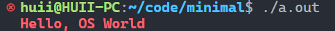运行结果
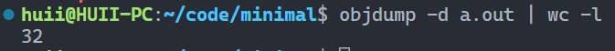查看行数
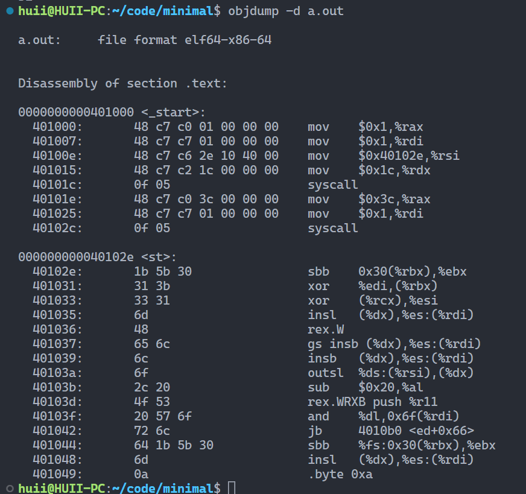调试查看内容
对一些细节的补充解释
为什么用 gcc 编译？
- gcc 会进行预编译 (可以使用
__ASSEMBLER__宏区分汇编/C 代码)
ANSI Escape Code 的更多应用
- vi.c from busybox
dialog --msgbox 'Hello, OS World!' 8 32ssh -o 'HostKeyAlgorithms +ssh-rsa' sshtron.zachlatta.com
汇编代码的状态机模型
Everything is a state machine: 计算机 = 数字电路 = 状态机
所有的指令都只能计算
理解高级语言程序
非递归汉诺塔实现
- hanoi-main.c
1 | #include <stdio.h> |
- 一般使用递归解决hanoi-r.c
1 | void hanoi(int n, char from, char to, char via) { |
- 但是可以使用非递归进行实现
1 | typedef struct { |
通过与chatGPT的交流，可以了解该程序的实现原理。
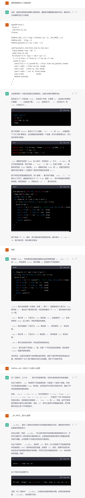chatGPT理解的程序实现原理
对 C 程序做出简化
状态机定义
- 状态 = 堆 + 栈
- 初始状态 =
main的第一条语句 - 状态迁移 = 执行一条语句中的一小步
理解编译器
我们有两种状态机
高级语言代码.
c
- 状态：栈、全局变量；状态迁移：语句执行
汇编指令序列.
s
- 状态：(M,R)；状态迁移：指令执行
编译器是二者之间的桥梁：.s=compile(.c)
.s=compile(.c)：编译正确性
.c 执行中所有外部观测者可见的行为，必须在 .s 中保持一致
在此前提下，任何翻译都是合法的 (例如我们期望更快或更短的代码)
操作系统上的软件 (应用程序)
操作系统中的任何程序
任何程序 = minimal.S = 调用 syscall 的状态机
可执行文件是操作系统中的对象
- 与大家日常使用的文件 (a.c, README.txt) 没有本质区别
- 操作系统提供 API 打开、读取、改写 (都需要相应的权限)
查看可执行文件
vimcat1
2
3
,xxd1
2
3
,- 处理器处于 16-bit 模式 -1
2
3
4
5
6
7
8
9
10
11
12
13
14
15
16
17
18
19
20
21
22
23
24
25
26
27
28
29
30
31
32
33
34
35
36
37
38
39
40
41
42
43
44
45
46
47
48
49
50
51
52
53
54
55
56
57
58
59
60
61
62
63
64
65
66
67
68
69
70
71
72
73
74
75
76
77
78
79
80
81
82
83
84
85
86
87
88
89
90
91
92
93
94
95
96
97
98
99
100
101
102
103
104
105
106
107
108
109
110
111
112
113
都可以直接 “查看” 可执行文件
- `vim` 中二进制的部分无法 “阅读”，但可以看到字符串常量
- 使用 `xxd` 可以看到文件以 `"\x7f" "ELF"` 开头
- Vscode 有 binary editor 插件
尝试使用文本编辑器打开之前的最小Hello World程序，可以在里面找到对应的字样。
使用文本编辑器查看a.out
在vim中使用命令`:%!xxd`，实现编辑区域中文本传递中到xxd。
处理后
### 系统中常见的应用程序
Core Utilities (coreutils)
- *Standard* programs for text and file manipulation
- 系统中安装的是
GNU Coreutils
- 有较小的替代品 [busybox](https://www.busybox.net/)
系统/工具程序
- bash,
binutils
, apt, ip, ssh, vim, tmux, jdk, python, ...
- 这些工具的原理不复杂 (例如 apt 是 dpkg 的套壳)，但琐碎
- [Ubuntu Packages](https://packages.ubuntu.com/) (和 apt-file 工具) 支持文件名检索
其他各种应用程序
- Vscode, 浏览器、音乐播放器……
### 打开程序的执行：Trace (追踪)
使用strace ./a.out进行追踪程序的系统调用。
strace
### 操作系统中 “任何程序” 的一生
> 任何程序 = minimal.S = 调用 syscall 的状态机
## 总结
无论是汇编代码还是高级语言程序，它们都可以表示成状态机：
- 高级语言代码 .c
- 状态：栈、全局变量；状态迁移：语句执行
- 汇编指令序列 .s
- 状态：(M,R)；状态迁移：指令执行
- 编译器实现了两种状态机之间的翻译
应用程序与操作系统沟通的唯一桥梁是系统调用指令 (例如 x86-64 的 syscall)。计算机系统不存在玄学；一切都建立在确定的机制上。
- 理解操作系统的重要工具：gcc, binutils, gdb, strace。
# 绪论3_硬件视角的操作系统_2023.2.28
## 回顾：计算机硬件
### 计算机硬件 = 数字电路
基本构件：wire, reg, NAND
程序是 “严格的数学对象”
不仅是程序，整个计算机系统也是一个状态机
- 状态：内存和寄存器数值
- **初始状态**：手册规定 (CPU Reset)
- 状态迁移
- 任意选择一个处理器 cpu
- 响应处理器外部中断
- 从 cpu.PC 取指令执行
## 硬件与程序员的约定
Bare-metal 与厂商的约定
- CPU Reset 后的状态
(寄存器值)
- 厂商自由处理这个地址上的值
- Memory-mapped I/O
厂商为操作系统开发者提供 Firmware
- 管理硬件和系统配置
- 把存储设备上的代码加载到内存
- 例如存储介质上的第二级 loader (加载器)
- 或者直接加载操作系统 (嵌入式系统)
### x86 Family: CPU Reset
intel-cpu-reset
- 寄存器会有确定的初始状态
- `EIP = 0x0000fff0`
- ```
CR0 = 0x60000010EFLAGS = 0x00000002
1
2
3
4
5
6
7
8
9
10
11
12
13
14
15
16
17
18
19
20
21
22
23
24
25
26
27
28
29
30
31
32
33
34
35
36
37
38
39
40
41
42
43
44
45
46
47
48
49
50
51
52
53
54
55
56
57
58
59
60
61
62
- Interrupt disabled
- TFM (5,000 页+)
- 最需要的 Volume 3A 只有 ~400 页 (我们更需要 AI)
### 其他平台上的 CPU Reset
Reset 后处理器都从固定地址 (Reset Vector) 启动
- MIPS: 0xbfc00000
- Specification 规定
- ARM: 0x00000000
- Specification 规定
- 允许配置 Reset Vector Base Address Register
- RISC-V: Implementation defined
- 给厂商最大程度的自由
Firmware 负责加载操作系统
- 开发板：直接把加载器写入 ROM
- QEMU：`-kernel` 可以绕过 Firmware 直接加载内核 ([RTFM](https://www.qemu.org/docs/master/system/invocation.html#hxtool-8))
### x86 CPU Reset 之后：到底执行了什么？
bios-firmware
状态机 (初始状态) 开始执行
- 从 PC 取指令、译码、执行……
- 开始执行厂商 “安排好” 的 Firmware 代码
- x86 Reset Vector 是一条向 Firmware 跳转的 jmp 指令
Firmware: [BIOS vs. UEFI](https://www.zhihu.com/question/21672895)
- 一个小 “操作系统”
- 管理、配置硬件；加载操作系统
- Legacy BIOS (Basic I/O System)
- IBM PC 所有设备/BIOS 中断是有 specification 的 (成就了 “兼容机”)
- UEFI (Unified Extensible Firmware Interface)
### 为什么需要 UEFI？
今天的 Firmware 面临麻烦得多的硬件：
- 指纹锁、USB 转接器上的 Linux-to-Go 优盘、山寨网卡上的 PXE 网络启动、USB 蓝牙转接器连接的蓝牙键盘、……
- 这些设备都需要 “驱动程序” 才能访问
- 解决 BIOS 逐渐碎片化的问题
UEFI-booting-seq
### 回到 Legacy BIOS: 约定
BIOS 提供机制，将**程序员的代码**载入内存
- Legacy BIOS 把第一个可引导设备的第一个
512
字节加载到物理内存的7c00
1
2
3
4
5
6
7
位置
- 此时处理器处于 16-bit 模式
- 规定CS:IP = 0x7c00
1
2
3
,(R[CS] << 4) | R[IP] == 0x7c00
1
2
3
4
5
6
7
8
9
10
11
12
13
14
15
16
17
18
19
20
21
22
23
24
25
26
27
28
29
30
31
32
33
- 可能性1：`CS = 0x07c0, IP = 0`
- 可能性2：`CS = 0, IP = 0x7c00`
- 其他没有任何约束
虽然最多只有 446 字节代码 (64B 分区表 + 2B 标识)
- 但控制权已经回到程序员手中了！
- 你甚至可以让 ChatGPT 给你写一个 Hello World
- 当然，他是抄作业的 (而且是有些小问题的)
计算机系统公理：你想到的就一定有人做到
- 模拟方案：QEMU
- 传奇黑客、天才程序员
Fabrice Bellard
的杰作
- [QEMU, A fast and portable dynamic translator](https://www.usenix.org/legacy/publications/library/proceedings/usenix05/tech/freenix/full_papers/bellard/bellard.pdf) (USENIX ATC'05)
- Android Virtual Device, VirtualBox, ... 背后都是 QEMU
- 真机方案：JTAG (Joint Test Action Group) debugger
- 一系列 (物理) 调试寄存器，可以实现 gdb 接口 (!!!)
- Makefilembr.img: mbr.S
gcc -ggdb -c $<
ld mbr.o -Ttext 0x7c00
objcopy -S -O binary -j .text a.out $@
run: mbr.img
qemu-system-x86_64 $<
debug: mbr.img
qemu-system-x86_64 -s -S $< & # Run QEMU in background
gdb -x init.gdb # RTFM: gdb (1)
clean:
rm -f .img .o a.out1
2
3
- mbr.S
define SECT_SIZE 512
.code16 // 16-bit assembly
// Entry of the code
.globl _start
_start:
lea (msg), %si // R[si] = &msg;
again:
movb (%si), %al // R[al] = *R[si]; <—+
incw %si // R[si]++; |
orb %al, %al // if (!R[al]) |
jz done // goto done; —+ |
movb $0x0e, %ah // R[ah] = 0x0e; | |
movb $0x00, %bh // R[bh] = 0x00; | |
int $0x10 // bios_call(); | |
jmp again // goto again; —-+—-+
// |
done: // |
jmp . // goto done; <—-+
// Data: const char msg[] = “…”;
msg:
.asciz “This is a baby step towards operating systems!\r\n”
// Magic number for bootable device
.org SECT_SIZE - 2
.byte 0x55, 0xAA1
2
3
- init.gdb
Kill process (QEMU) on gdb exits
define hook-quit
kill
end
Connect to remote
target remote localhost:1234
file a.out
break *0x7c00
layout src
continue1
2
3
4
5
6
7
8
9
10
11
12
13
14
15
16
17
18
19
20
21
运行make run可以看到结果，编译生成的mbr.img大小为512字节。
运行
注意得要先安装一个qemu，命令`sudo apt-get install qemu-system-x86`。
由于已经写好脚本，可以使用`make debug`便捷启动debug。
debug
### UEFI 上的操作系统加载
标准化的加载流程
- 磁盘必须按 GPT (GUID Partition Table) 方式格式化
- 预留一个 FAT32 分区 (lsblk/fdisk 可以看到)
- Firmware 能够加载任意大小的 PE 可执行文件
.efi
1
2
3
4
5
6
7
8
9
10
11
12
13
14
15
16
17
18
19
20
21
22
23
24
25
26
27
28
29
30
31
- 没有 legacy boot 512 字节限制
- EFI 应用可以返回 firmware
更好的程序支持
- 设备驱动框架
- 更多的功能，例如 Secure Boot，只能启动 “信任” 的操作系统
## 实现最小 “操作系统”
### 我们已经获得的能力
为硬件直接编程
- 可以让机器运行任意不超过 510 字节的指令序列
- 编写任何指令序列 (状态机)
- 只要能问出问题，就可以 RTFM/STFW/ChatGPT 找到答案
- “如何在汇编里生成 *n* 个字节的 0”
- “如何在 x86 16-bit mode 打印字符”
操作系统：就一个 C 程序
- 用 510 字节的指令完成磁盘 → 内存的加载
- 初始化 C 程序的执行环境
- 操作系统就开始运行了！
### Bare-metal 上的 C 代码
为了让下列程序能够 “运行起来”：
int main() {
printf(“Hello, World\n”);
}1
2
3
4
5
6
7
8
9
10
11
12
我们需要准备什么？
- MBR 上的 “启动加载器” (Boot Loader)
- 我们可以通过编译器控制 C 程序的行为
- 静态链接/PIC (位置无关代码)
- Freestanding (不使用任何标准库)
- 自己手工实现库函数 (putch, printf, ...)
- 有亿点点细节：RTFSC!
- hello.c
include
define ESC “\033[“
define RED ESC “01;31m”
define CLR ESC “0m”
const char *MESSAGE = RED “Hello, OS World\n” CLR;
int main() {
for (const char s = MESSAGE; s; s++) {
putch(*s); // Prints to platform-dependent debug console
}
}1
2
3
- kernel.c
include
include
include
typedef union task {
struct {
const char name;
union task next;
void (entry)(void );
Context *context;
};
uint8_t stack[8192];
} Task;
Task *current;
void func(void arg) {
while (1) {
putch((char *)arg);
for (int volatile i = 0; i < 100000; i++) ;
}
}
Task tasks[] = {
{ .name = “a”, .entry = func },
{ .name = “b”, .entry = func },
};
Context on_interrupt(Event ev, Context ctx) {
if (!current) {
current = &tasks[0];
} else {
current->context = ctx;
}
return (current = current->next)->context;
}
int main() {
cte_init(on_interrupt); // call on_interrupt() on traps/interrupts
for (int i = 0; i < LENGTH(tasks); i++) {
Task task = &tasks[i];
Area stack = (Area) { &task->context + 1, task + 1 };
task->context = kcontext(stack, task->entry, (void )task->name);
task->next = &tasks[(i + 1) % LENGTH(tasks)];
}
iset(true); // Enable external interrupts (timer, I/O, …)
yield(); // Trap
}1
2
3
- Makefile
NAME := hello
SRCS := hello.c
export ARCH := x86_64-qemu
include $(AM_HOME)/Makefile1
2
3
4
5
6
7
8
9
10
11
运行结果
运行这段代码，我们需要设置 `AM_HOME` 环境变量为实验框架代码中的 AbstractMachine 所在目录 (绝对路径)
框架地址：[NJU-ProjectN/abstract-machine: A minimal, modularized, and machine-independent hardware abstraction layer (github.com)](https://github.com/NJU-ProjectN/abstract-machine)
设置方法：`vim ~/.bashrc ` ，然后添加`export AM_HOME=绝对路径` ，然后按Esc, :wq, 回车，然后`source ~/.bashrc`即可生效。
坑：可能出现报错：
/usr/include/stdint.h:26:10: fatal error: bits/libc-header-start.h: No such file or directory
26 | #include
|1
2
3
4
5
6
7
8
9
10
11
12
13
14
15
16
17
18
19
20
21
22
23
24
25
26
27
28
29
30
31
32
33
34
35
36
37
38
39
40
41
42
43
44
45
46
47
48
49
50
51
52
53
54
55
56
原因：编译的项目是在64位机器上生成32位的项目，你需要安装对应的gcc 32位的库
解决：`sudo apt install gcc-multilib`
对于vscode的<am.h>头文件报红，可以使用快速修复解决。（因此建议将其放在同一项目文件夹下）
快速修复
自动添加
# 绪论4_Python实现操作系统模型_2023.3.2
## 理解操作系统的新途径
### 回顾：程序/硬件的状态机模型
计算机软件
- 状态机 (C/汇编)
- 允许执行特殊指令 (syscall) 请求操作系统
- 操作系统 = API + 对象
计算机硬件
- “无情执行指令的机器”
- 从 CPU Reset 状态开始执行 Firmware 代码
- 操作系统 = C 程序
### 一个大胆的想法
无论是软件还是硬件，都是状态机
- 而状态和状态的迁移是可以 “画” 出来的！
- 理论上说，只需要两个 API
- `dump_state()` - 获取当前程序状态
- `single_step()` - 执行一步
- gdb 不就是做这个的吗！
## 操作系统 “玩具”：设计与实现
### 操作系统玩具：API
四个 “系统调用” API
- choose(xs): 返回 `xs` 中的一个随机选项
- write(s): 输出字符串 `s`
- spawn(fn): 创建一个可运行的状态机 `fn`
- sched(): 随机切换到任意状态机执行
除此之外，所有的代码都是确定 (deterministic) 的纯粹计算
- 允许使用 list, dict 等数据结构
软件就是状态机，操作系统是状态机的管理者。
count = 0
def Tprint(name):
global count
for i in range(3):
count += 1
sys_write(f’#{count:02} Hello from {name}{i+1}\n’)
sys_sched()
def main():
n = sys_choose([3, 4, 5])
sys_write(f’#Thread = {n}\n’)
for name in ‘ABCDE’[:n]:
sys_spawn(Tprint, name)
sys_sched()1
2
3
4
5
### 实现系统调用
有些 “系统调用” 的实现是显而易见的
def sys_write(s): print(s)
def sys_choose(xs): return random.choice(xs)
def sys_spawn(t): runnables.append(t)1
2
3
有些就困难了
def sys_sched():
raise NotImplementedError(‘No idea how’)1
2
3
4
5
6
7
8
9
10
11
12
13
我们需要
- 封存当前状态机的状态
- 恢复另一个 “被封存” 状态机的执行
- 没错，我们离真正的 “分时操作系统” 就只差这一步
### 借用 Python 的语言机制
Generator objects (无栈协程/轻量级线程/...)
利用了yield
def numbers():
i = 0
while True:
ret = yield f’{i:b}’ # “封存” 状态机状态
i += ret1
2
3
使用方法：
n = numbers() # 封存状态机初始状态
n.send(None) # 恢复封存的状态
n.send(0) # 恢复封存的状态 (并传入返回值)1
2
3
4
5
6
7
8
9
generator
send，以二进制结果输出
另外开一个线程m，切换
- os-model.py
!/usr/bin/env python3
import sys
import random
from pathlib import Path
class OperatingSystem():
“””A minimal executable operating system model.”””
SYSCALLS = ['choose', 'write', 'spawn', 'sched']
class Thread:
"""A "freezed" thread state."""
def __init__(self, func, *args):
self._func = func(*args)
self.retval = None
def step(self):
"""Proceed with the thread until its next trap."""
syscall, args, *_ = self._func.send(self.retval)
self.retval = None
return syscall, args
def __init__(self, src):
variables = {}
exec(src, variables)
self._main = variables['main']
def run(self):
threads = [OperatingSystem.Thread(self._main)]
while threads: # Any thread lives
try:
match (t := threads[0]).step():
case 'choose', xs: # Return a random choice
t.retval = random.choice(xs)
case 'write', xs: # Write to debug console
print(xs, end='')
case 'spawn', (fn, args): # Spawn a new thread
threads += [OperatingSystem.Thread(fn, *args)]
case 'sched', _: # Non-deterministic schedule
random.shuffle(threads)
except StopIteration: # A thread terminates
threads.remove(t)
random.shuffle(threads) # sys_sched()
if name == ‘main‘:
if len(sys.argv) < 2:
print(f’Usage: {sys.argv[0]} file’)
exit(1)
src = Path(sys.argv[1]).read_text()
for syscall in OperatingSystem.SYSCALLS:
src = src.replace(f'sys_{syscall}', # sys_write(...)
f'yield "{syscall}", ') # -> yield 'write', (...)
OperatingSystem(src).run()
1 |
|
def main():
sys_write(‘Hello, OS World\n’) # sys_write -> print1
2
3
4
5
调用结果
- threads.py
count = 0
def Tprint(name):
global count
for i in range(3):
count += 1
sys_write(f’#{count:02} Hello from {name}{i+1}\n’)
sys_sched()
def main():
n = sys_choose([3, 4, 5])
sys_write(f’#Thread = {n}\n’)
for name in ‘ABCDE’[:n]:
sys_spawn(Tprint, name)
sys_sched()1
2
3
4
5
6
7
8
9
10
11
12
13
14
15
16
17
18
19
20
21
22
23
24
25
26
27
28
29
30
31
32
33
34
35
36
37
38
39
40
41
42
43
44
45
46
47
48
49
50
51
52
53
54
55
56
57
58
59
60
61
62
threads
## 建模操作系统
### 一个更 “全面” 的操作系统模型
进程 + 线程 + 终端 + 存储 (崩溃一致性)
| 系统调用/Linux 对应 | 行为 |
| ---------------------------- | ------------------------------ |
| sys_spawn(fn)/pthread_create | 创建从 fn 开始执行的线程 |
| sys_fork()/fork | 创建当前状态机的完整复制 |
| sys_sched()/定时被动调用 | 切换到随机的线程/进程执行 |
| sys_choose(xs)/rand | 返回一个 xs 中的随机的选择 |
| sys_write(s)/printf | 向调试终端输出字符串 s |
| sys_bread(k)/read | 读取虚拟设磁盘块 *k* 的数据 |
| sys_bwrite(k, v)/write | 向虚拟磁盘块 *k* 写入数据 *v* |
| sys_sync()/sync | 将所有向虚拟磁盘的数据写入落盘 |
| sys_crash()/长按电源按键 | 模拟系统崩溃 |
行为
### 模型做出的简化
被动进程/线程切换
- 实际程序随时都可能被动调用 `sys_sched()` 切换
只有一个终端
- 没有 `read()` (用 choose 替代 “允许读到任意值”)
磁盘是一个 `dict`
- 把任意 key 映射到任意 value
- 实际的磁盘
- key 为整数
- value 是固定大小 (例如 4KB) 的数据
- 二者在某种程度上是可以 “互相转换” 的
### 模型实现
原理与刚才的 “最小操作系统玩具” 类似
- [mosaic.py](https://jyywiki.cn/pages/OS/2023/mosaic/mosaic.py) - 500 行建模操作系统
- 进程/线程都是 Generator Object
- 共享内存用 heap 变量访问
- 线程会得到共享 heap 的指针
- 进程会得到一个独立的 heap clone
输出程序运行的 “状态图”
- JSON Object
- Vertices: 线程/进程、内存快照、设备历史输出
- Edges: 系统调用
- 操作系统就是 “状态机的管理者”
- mosaic.py
!/usr/bin/env python3
Mosaic Emulator and Checker
import argparse
import ast
import copy
import inspect
import json
import random
from dataclasses import dataclass
from itertools import compress, product
from pathlib import Path
from typing import Callable, Generator
1. Mosaic system calls
1.1 Process, thread, and context switching
sys_fork = lambda: os.sys_fork()
sys_spawn = lambda fn, args: os.sys_spawn(fn, args)
sys_sched = lambda: os.sys_sched()
1.2 Virtual character device
sys_choose = lambda choices: os.sys_choose(choices)
sys_write = lambda args: os.sys_write(args)
1.3 Virtual block storage device
sys_bread = lambda k: os.sys_bread(k)
sys_bwrite = lambda k, v: os.sys_bwrite(k, v)
sys_sync = lambda: os.sys_sync()
sys_crash = lambda: os.sys_crash()
1.4 System call helpers
SYSCALLS = []
def syscall(func): # @syscall decorator
SYSCALLS.append(func.name)
return func
2. Mosaic operating system emulator
2.1 Data structures
class Heap:
pass # no member: self.dict is the heap
@dataclass
class Thread:
context: Generator # program counter, local variables, etc.
heap: Heap # a pointer to thread’s “memory”
@dataclass
class Storage:
persist: dict # persisted storage state
buf: dict # outstanding operations yet to be persisted
2.2 The OperatingSystem class
class OperatingSystem:
“””An executable operating system model.
The operating system model hosts a single Python application with a
main() function accessible to a shared heap and 9 system calls
(marked by the @syscall decorator). An example:
def main():
pid = sys_fork()
sys_sched() # non-deterministic context switch
if pid == 0:
sys_write('World')
else:
sys_write('Hello')
At any moment, this model keeps tracking a set of threads and a
"currently running" one. Each thread consists of a reference to a
heap object (may be shared with other threads) and a private context
(program counters, local variables, etc.). A thread context is a
Python generator object, i.e., a stack-less coroutine [1] that can
save the running context and yield itself.
For applications, the keyword "yield" is reserved for system calls.
For example, a "choose" system call [2]:
sys_choose(['A', 'B'])
is transpiled as yielding the string "sys_choose" followed by its
parameters (choices):
res = yield 'sys_choose', ['A', 'B'].
Yield will transfer the control to the OS for system call handling
and eventually returning a value ('A' or 'B') to the application.
Right after transferring control to the OS by "yield", the function
state is "frozen", where program counters and local variables are
accessible via the generator object. Therefore, OS can serialize its
internal state--all thread's contexts, heaps, and virtual device
states at this moment.
In this sense, operating system is a system-call driven state
transition system:
(s0) --run first thread (main)-> (s1)
--sys_choose and application execution-> (s2)
--sys_sched and application execution-> (s3) ...
Real operating systems can be preemptive--context switching can
happen non-deterministically at any program point, simply because
processor can non-deterministically interrupt its currently running
code and transfer the control to the operating system.
The OS internal implementation does NOT immediately process the
system call: it returns all possible choices available at the moment
and their corresponding processing logic as callbacks. For the
example above, the "choose" system call returns a non-deterministic
choice among given choices. The internal implementation thus returns
choices = {
'A': (lambda: 'A'),
'B': (lambda: 'B'),
}
for later processing. Another example is non-deterministic context
switching by yielding 'sys_sched'. Suppose there are threads t1 and
t2 at the moment. The system call handler will return
choices = {
't1': (lambda: switch_to(t1)),
't2': (lambda: switch_to(t2)),
}
in which switch_to(th) replaces the OS's current running thread with
th (changes the global "heap" variable). Such deferred execution of
system calls separates the mechanism of non-deterministic choices
from the actual decision makers (e.g., an interpreter or a model
checker). Once the decision is made, the simply call step(choice)
and the OS will execute this choice by
choices[choice]()
with the application code (generator) being resumed.
This model provides "write" system call to immediately push data to
a hypothetical character device like a tty associated with stdout.
We model a block device (key-value store) that may lose data upon
crash. The model assumes atomicity of each single block write (a
key-value update). However, writes are merely to a volatile buffer
which may non-deterministically lose data upon crash 3]. The "sync"
system call persists buffered writes.
References:
[1] N. Schemenauer, T. Peters, and M. L. Hetland. PEP 255 -
Simple generators. https://peps.python.org/pep-0255/
[2] J. Yang, C. Sar, and D. Engler. eXplode: a lightweight, general
system for finding serious storage system errors. OSDI'06.
[3] T. S. Pillai, V. Chidambaram, R. Alagappan, A. Al-Kiswany, A. C.
Arpaci-Dusseau, and R. H. Arpaci-Dusseau. All file systems are
not created equal: On the complexity of crafting crash
consistent applications. OSDI'14.
"""
def __init__(self, init: Callable):
"""Create a new OS instance with pending-to-execute init thread."""
# Operating system states
self._threads = [Thread(context=init(), heap=Heap())]
self._current = 0
self._choices = {init.__name__: lambda: None}
self._stdout = ''
self._storage = Storage(persist={}, buf={})
# Internal states
self._init = init
self._trace = []
self._newfork = set()
2.3 System call implementation
2.3.1 Process, thread, and context switching
@syscall
def sys_spawn(self, func: Callable, *args):
"""Spawn a heap-sharing new thread executing func(args)."""
def do_spawn():
self._threads.append(
Thread(
context=func(*args), # func() returns a new generator
heap=self.current().heap, # shared heap
)
)
return {'spawn': (lambda: do_spawn())}
@syscall
def sys_fork(self):
"""Create a clone of the current thread with a copied heap."""
if all(not f.frame.f_locals['fork_child']
for f in inspect.stack()
if f.function == '_step'): # this is parent; do fork
# Deep-copying generators causes troubles--they are twined with
# Python's runtime state. We use an (inefficient) hack here: replay
# the entire trace and override the last fork() to avoid infinite
# recursion.
os_clone = OperatingSystem(self._init)
os_clone.replay(self._trace[:-1])
os_clone._step(self._trace[-1], fork_child=True)
# Now os_clone._current is the forked process. Cloned thread just
# yields a sys_fork and is pending for fork()'s return value. It
# is necessary to mark cloned threads (in self._newfork) and send
# child's fork() return value when they are scheduled for the
# first time.
def do_fork():
self._threads.append(os_clone.current())
self._newfork.add((pid := len(self._threads)) - 1)
return 1000 + pid # returned pid starts from 1000
return {'fork': (lambda: do_fork())}
else:
return None # overridden fork; this value is never used because
# os_clone is destroyed immediately after fork()
@syscall
def sys_sched(self):
"""Return a non-deterministic context switch to a runnable thread."""
return {
f't{i+1}': (lambda i=i: self._switch_to(i))
for i, th in enumerate(self._threads)
if th.context.gi_frame is not None # thread still alive?
}
2.3.2 Virtual character device (byte stream)
@syscall
def sys_choose(self, choices):
"""Return a non-deterministic value from choices."""
return {f'choose {c}': (lambda c=c: c) for c in choices}
@syscall
def sys_write(self, *args):
"""Write strings (space separated) to stdout."""
def do_write():
self._stdout += ' '.join(str(arg) for arg in args)
return {'write': (lambda: do_write())}
2.3.3 Virtual block storage device
@syscall
def sys_bread(self, key):
"""Return the specific key's associated value in block device."""
storage = self._storage
return {'bread': (lambda:
storage.buf.get(key, # always try to read from buffer first
storage.persist.get(key, None) # and then persistent storage
)
)}
@syscall
def sys_bwrite(self, key, value):
"""Write (key, value) pair to block device's buffer."""
def do_bwrite():
self._storage.buf[key] = value
return {'bwrite': (lambda: do_bwrite())}
@syscall
def sys_sync(self):
"""Persist all buffered writes."""
def do_sync():
store = self._storage
self._storage = Storage(
persist=store.persist | store.buf, # write back
buf={}
)
return {'sync': (lambda: do_sync())}
@syscall
def sys_crash(self):
"""Simulate a system crash that non-deterministically persists
outstanding writes in the buffer.
"""
persist = self._storage.persist
btrace = self._storage.buf.items() # block trace
crash_sites = (
lambda subset=subset:
setattr(self, '_storage',
Storage( # persist only writes in the subset
persist=persist | dict(compress(btrace, subset)),
buf={}
)
) for subset in # Mosaic allows persisting any subset of
product( # pending blocks in the buffer
*([(0, 1)] * len(btrace))
)
)
return dict(enumerate(crash_sites))
2.4 Operating system as a state machine
def replay(self, trace: list) -> dict:
"""Replay an execution trace and return the resulting state."""
for choice in trace:
self._step(choice)
return self.state_dump()
def _step(self, choice, fork_child=False):
self._switch_to(self._current)
self._trace.append(choice) # keep all choices for replay-based fork()
action = self._choices[choice] # return value of sys_xxx: a lambda
res = action()
try: # Execute current thread for one step
func, args = self.current().context.send(res)
assert func in SYSCALLS
self._choices = getattr(self, func)(*args)
except StopIteration: # ... and thread terminates
self._choices = self.sys_sched()
# At this point, the operating system's state is
# (self._threads, self._current, self._stdout, self._storage)
# and outgoing transitions are saved in self._choices.
2.5 Misc and helper functions
def state_dump(self) -> dict:
"""Create a serializable Mosaic state dump with hash code."""
heaps = {}
for th in self._threads:
if (i := id(th.heap)) not in heaps: # unique heaps
heaps[i] = len(heaps) + 1
os_state = {
'current': self._current,
'choices': sorted(list(self._choices.keys())),
'contexts': [
{
'heap': heaps[id(th.heap)], # the unique heap id
'pc': th.context.gi_frame.f_lineno,
'locals': th.context.gi_frame.f_locals,
} if th.context.gi_frame is not None else None
for th in self._threads
],
'heaps': {
heaps[id(th.heap)]: th.heap.__dict__
for th in self._threads
},
'stdout': self._stdout,
'store_persist': self._storage.persist,
'store_buffer': self._storage.buf,
}
h = hash(json.dumps(os_state, sort_keys=True)) + 2**63
return (copy.deepcopy(os_state) # freeze the runtime state
| dict(hashcode=f'{h:016x}'))
def current(self) -> Thread:
"""Return the current running thread object."""
return self._threads[self._current]
def _switch_to(self, tid: int):
self._current = tid
globals()['os'] = self
globals()['heap'] = self.current().heap
if tid in self._newfork:
self._newfork.remove(tid) # tricky: forked process must receive 0
return 0 # to indicate a child
3. The Mosaic runtime
class Mosaic:
“””The operating system interpreter and model checker.
The operating system model is a state transition system: os.replay()
maps any trace to a state (with its outgoing transitions). Based
on this model, two state space explorers are implemented:
- run: Choose outgoing transitions uniformly at random, yielding a
single execution trace.
- check: Exhaustively explore all reachable states by a breadth-
first search. Duplicated states are not visited twice.
Both explorers produce the visited portion of the state space as a
serializable object containing:
- source: The application source code
- vertices: A list of operating system state dumps. The first vertex
in the list is the initial state. Each vertex has a
unique "hashcode" id.
- edges: A list of 3-tuples: (source, target, label) denoting an
explored source --[label]-> target edge. Both source and
target are state hashcode ids.
"""
3.1 Model interpreter and checker
def run(self) -> dict:
"""Interpret the model with non-deterministic choices."""
os = OperatingSystem(self.entry)
V, E = [os.state_dump() | dict(depth=0)], []
while (choices := V[-1]['choices']):
choice = random.choice(choices) # uniformly at random
V.append(os.replay([choice]) | dict(depth=len(V)))
E.append((V[-2]['hashcode'], V[-1]['hashcode'], choice))
return dict(source=self.src, vertices=V, edges=E)
def check(self) -> dict:
"""Exhaustively explore the state space."""
class State:
entry = self.entry
def __init__(self, trace):
self.trace = trace
self.state = OperatingSystem(State.entry).replay(trace)
self.state |= dict(depth=0)
self.hashcode = self.state['hashcode']
def extend(self, c):
st = State(self.trace + (c,))
st.state = st.state | dict(depth=self.state['depth'] + 1)
return st
st0 = State(tuple()) # initial state of empty trace
queued, V, E = [st0], {st0.hashcode: st0.state}, []
while queued:
st = queued.pop(0)
for choice in st.state['choices']:
st1 = st.extend(choice)
if st1.hashcode not in V: # found an unexplored state
V[st1.hashcode] = st1.state
queued.append(st1)
E.append((st.hashcode, st1.hashcode, choice))
return dict(
source=self.src,
vertices=sorted(V.values(), key=lambda st: st['depth']),
edges=E
)
3.1 Source code parsing and rewriting
class Transformer(ast.NodeTransformer):
def visit_Call(self, node):
# Rewrite system calls as yields
if (isinstance(node.func, ast.Name) and
node.func.id in SYSCALLS): # rewrite system calls
return ast.Yield(ast.Tuple( # -> yield ('sys_xxx', args)
elts=[
ast.Constant(value=node.func.id),
ast.Tuple(elts=node.args),
]
))
else:
return node
def __init__(self, src: str):
tree = ast.parse(src)
hacked_ast = self.Transformer().visit(tree)
hacked_src = ast.unparse(hacked_ast)
context = {}
exec(hacked_src, globals(), context)
globals().update(context)
self.src = src
self.entry = context['main'] # must have a main()
4. Utilities
if name == ‘main‘:
parser = argparse.ArgumentParser(
description=’The modeled operating system and state explorer.’
)
parser.add_argument(
‘source’,
help=’application code (.py) to be checked; must have a main()’
)
parser.add_argument(‘-r’, ‘—run’, action=’store_true’)
parser.add_argument(‘-c’, ‘—check’, action=’store_true’)
args = parser.parse_args()
src = Path(args.source).read_text()
mosaic = Mosaic(src)
if args.check:
explored = mosaic.check()
else:
explored = mosaic.run() # run is the default option
# Serialize the explored states and write to stdout. This encourages piping
# the results to another tool following the UNIX philosophy. Examples:
#
# mosaic --run foo.py | grep stdout | tail -n 1 # quick and dirty check
# mosaic --check bar.py | fx # or any other interactive visualizer
#
print(json.dumps(explored, ensure_ascii=False, indent=2))
1 |
|
def hello(s):
return f’Hello, {s}\n’
def main():
sys_write(hello(‘OS’))
sys_write(hello(‘World’))1
2
3
4
5
运行结果
输出的json内容如下：
{
“source”: “def hello(s):\n return f’Hello, {s}\n’\n\ndef main():\n sys_write(hello(‘OS’))\n sys_write(hello(‘World’))\n”,
“vertices”: [
{
“current”: 0,
“choices”: [
“main”
],
“contexts”: [
{
“heap”: 1,
“pc”: 4,
“locals”: {}
}
],
“heaps”: {
“1”: {}
},
“stdout”: “”,
“store_persist”: {},
“store_buffer”: {},
“hashcode”: “406bec4fbd4b5d4f”,
“depth”: 0
},
{
“current”: 0,
“choices”: [
“write”
],
“contexts”: [
{
“heap”: 1,
“pc”: 5,
“locals”: {}
}
],
“heaps”: {
“1”: {}
},
“stdout”: “”,
“store_persist”: {},
“store_buffer”: {},
“hashcode”: “9e2e4498c1ff0567”,
“depth”: 1
},
{
“current”: 0,
“choices”: [
“write”
],
“contexts”: [
{
“heap”: 1,
“pc”: 6,
“locals”: {}
}
],
“heaps”: {
“1”: {}
},
“stdout”: “Hello, OS\n”,
“store_persist”: {},
“store_buffer”: {},
“hashcode”: “b2475d0bbff9b748”,
“depth”: 2
},
{
“current”: 0,
“choices”: [],
“contexts”: [
null
],
“heaps”: {
“1”: {}
},
“stdout”: “Hello, OS\nHello, World\n”,
“store_persist”: {},
“store_buffer”: {},
“hashcode”: “27f2e79cbd5a9d60”,
“depth”: 3
}
],
“edges”: [
[
“406bec4fbd4b5d4f”,
“9e2e4498c1ff0567”,
“main”
],
[
“9e2e4498c1ff0567”,
“b2475d0bbff9b748”,
“write”
],
[
“b2475d0bbff9b748”,
“27f2e79cbd5a9d60”,
“write”
]
]
}1
2
3
4
5
6
7
8
9
10
11
12
13
14
15
16
可视化结果
多线程程序最小值
# 并发1_多处理器编程_2023.3.7
## 多处理器编程入门
操作系统作为 “状态机的管理者”，引入了共享的状态
- 带来了并发
- (操作系统是最早的并发程序)
对hello.py，不同时间运行结果不一致
def Tprint(name):
sys_write(f’{name}’)
def main():
for name in ‘AB’:
sys_spawn(Tprint, name)1
2
3
4
5
6
7
8
9
10
11
12
13
运行结果
### 多线程共享内存并发
线程：共享内存的执行流
- 执行流拥有独立的堆栈/寄存器
简化的线程 API (thread.h)
- ```
spawn(fn)
创建一个入口函数是
1
fn
的线程，并立即开始执行
void fn(int tid) { ... }- 参数
tid从 1 开始编号
行为：
sys_spawn(fn, tid)
- ```
join()1
2
3
4
5
6
- 等待所有运行线程的返回 (也可以不调用)
- 行为：`while (done != T) sys_sched()`
hello.cinclude “thread.h”
void Thello(int id) {
while (1) {
printf(“%c”, “_ABCDEFGHIJKLMNOPQRSTUVWXYZ”[id]);
}
}
int main() {
for (int i = 0; i < 10; i++) {
create(Thello);
}
}1
2
3
thread.h
include
include
include
include
include
include
include
define NTHREAD 64
enum { T_FREE = 0, T_LIVE, T_DEAD, };
struct thread {
int id, status;
pthread_t thread;
void (*entry)(int);
};
struct thread tpool[NTHREAD], *tptr = tpool;
void wrapper(void arg) {
struct thread thread = (struct thread )arg;
thread->entry(thread->id);
return NULL;
}
void create(void fn) {
assert(tptr - tpool < NTHREAD);
tptr = (struct thread) {
.id = tptr - tpool + 1,
.status = T_LIVE,
.entry = fn,
};
pthread_create(&(tptr->thread), NULL, wrapper, tptr);
++tptr;
}
void join() {
for (int i = 0; i < NTHREAD; i++) {
struct thread *t = &tpool[i];
if (t->status == T_LIVE) {
pthread_join(t->thread, NULL);
t->status = T_DEAD;
}
}
}
attribute((destructor)) void cleanup() {
join();
}1
2
3
4
5
6
7
8
9
10
11
运行结果
查看cpu发现，cpu占用达到800%，说明可以使用多处理器。
800%
### 多线程共享内存并发：入门
多处理器编程：一个 API 搞定
include “thread.h”
void Ta() { while (1) { printf(“a”); } }
void Tb() { while (1) { printf(“b”); } }
int main() {
create(Ta);
create(Tb);
}1
2
3
4
5
6
7
8
9
10
11
12
13
14
15
16
17
18
19
20
21
22
23
- 这个程序可以利用系统中的多处理器
- 操作系统会自动把线程放置在不同的处理器上
- CPU 使用率超过了 100%
### 问出更多的问题
`Ta` 和 `Tb` 真的共享内存吗？
- 如何证明/否证这件事？
如何证明线程具有独立堆栈 (以及确定堆栈的范围)？
- 输出混乱，应该如何处理？
更多的 “好问题” 和解决
- 创建线程使用的是哪个系统调用？
- 能不能用 gdb 调试？
- 基本原则：有需求，就能做到 ([RTFM](https://sourceware.org/gdb/onlinedocs/gdb/Threads.html))
stack-probe.c
include “thread.h”
include
void volatile low[64];
void volatile high[64];
void update_range(int T, void *ptr) {
if (ptr < low[T]) low[T] = ptr;
if (ptr > high[T]) high[T] = ptr;
}
void probe(int T, int n) {
update_range(T, &n);
long sz = (uintptr_t)high[T] - (uintptr_t)low[T];
if (sz % 1024 < 32) {
printf(“Stack(T%d) >= %ld KB\n”, T, sz / 1024);
}
probe(T, n + 1); // Infinite recursion
}
void Tprobe(int T) {
low[T] = (void )-1;
high[T] = (void )0;
update_range(T, &T);
probe(T, 0);
}
int main() {
setbuf(stdout, NULL);
for (int i = 0; i < 4; i++) {
create(Tprobe);
}
}1
2
3
4
5
6
7
8
9
10
11
12
13
14
15
16
17
18
19
20
21
22
23
24
25
26
27
28
29
30
31
32
33
结果
最多8192kb。排序后最大可以看到的是8177。
排序后结果
### `thread.h` 背后：POSIX Threads
想进一步配置线程？
- 设置更大的线程栈
- 设置 detach 运行 (不在进程结束后被杀死，也不能 join)
- ……
POSIX 为我们提供了线程库 (pthreads)
- `man 7 pthreads`
- 练习：改写 thread.h，使得线程拥有更大的栈
- 可以用 stack probe 的程序验证
## 放弃 (1)：原子性
### 状态机的隐含假设
“世界上只有一个状态机”
- 没有其他任何人能 “干涉” 程序的状态
- 推论：对变量的 load 一定返回本线程最后一次 store 的值
- 这也是编译优化的基本假设
但共享内存推翻了这个假设
int Tworker() {
printf(“%d\n”, x); // Global x
printf(“%d\n”, x);
}1
2
3
- 其他线程随时可以修改
x
1
2
3
4
5
- 导致两次可能读到不同的 `x`
潘多拉的魔盒已经打开……
unsigned int balance = 100;
int Talipay_withdraw(int amt) {
if (balance >= amt) {
balance -= amt;
return SUCCESS;
} else {
return FAIL;
}
}1
2
3
4
5
6
7
8
9
两个线程并发支付 ¥100 会发生什么 (代码演示)
- 账户里会多出用不完的钱！
- Bug/漏洞不跟你开玩笑：Mt. Gox Hack 损失 650,000 BTC
- 时值 ~$28,000,000,000
alipay.c
include “thread.h”
unsigned long balance = 100;
void Alipay_withdraw(int amt) {
if (balance >= amt) {
usleep(1); // Unexpected delays
balance -= amt;
}
}
void Talipay(int id) {
Alipay_withdraw(100);
}
int main() {
create(Talipay);
create(Talipay);
join();
printf(“balance = %lu\n”, balance);
}1
2
3
4
5
6
7
8
9
10
11
12
13
14
15
运行结果
### 例子：Diablo I (1996)
在捡起要复制物品的瞬间拿起 1 块钱
- 1 块钱会被 “覆盖” 成捡起的物品
<video controls="" src="https://jyywiki.cn/pages/OS/img/diablo-item-clone.mp4"></video>
### 例子：求和
分两个线程，计算 1+1+1+…+11+1+1+…+1 (共计 2*n* 个 1)
define N 100000000
long sum = 0;
void Tsum() { for (int i = 0; i < N; i++) sum++; }
int main() {
create(Tsum);
create(Tsum);
join();
printf(“sum = %ld\n”, sum);
}1
2
3
4
5
6
7
8
9
10
11
12
13
14
15
16
17
18
19
20
21
22
23
24
25
26
27
28
可能的结果
- 119790390, 99872322 (结果可以比 `N` 还要小), ...
- 直接使用汇编指令也不行
结果
### 指令/代码执行原子性假设
> “处理器一次执行一条指令” 的基本假设在今天的计算机系统上不再成立 (我们的模型作出了简化的假设)。
单处理器多线程
- 线程在运行时可能被中断，切换到另一个线程执行
多处理器多线程
- 线程根本就是并行执行的
(历史) 1960s，大家争先在共享内存上实现原子性 (互斥)
- 但几乎所有的实现都是错的，直到 [Dekker's Algorithm](https://en.wikipedia.org/wiki/Dekker's_algorithm)，还只能保证两个线程的互斥
### 放弃原子性假设的后果
`printf` 还能在多线程程序里调用吗？
void thread1() { while (1) { printf(“a”); } }
void thread2() { while (1) { printf(“b”); } }1
2
3
4
5
6
7
8
9
我们都知道 printf 是有缓冲区的 (为什么？)
- 如果执行 `buf[pos++] = ch` (`pos` 共享) 不就 💥 了吗？
## 放弃 (2)：执行顺序
分两个线程，计算 1+1+1+…+11+1+1+…+1 (共计 2*n* 个 1)
define N 100000000
long sum = 0;
void Tsum() { for (int i = 0; i < N; i++) sum++; }
int main() {
create(Tsum);
create(Tsum);
join();
printf(“sum = %ld\n”, sum);
}1
2
3
4
5
6
7
8
9
10
11
12
13
14
15
16
17
18
19
20
如果添加编译优化？
- `-O1`: 100000000 😱😱
- `-O2`: 200000000 😱😱😱
结果
**编译器仅对顺序执行的程序负责！**
> 编译器对内存访问 “eventually consistent” 的处理导致共享内存作为线程同步工具的失效。
刚才的例子
- `-O1`: `R[eax] = sum; R[eax] += N; sum = R[eax]`
- `-O2`: `sum += N;`
- (你的编译器也许是不同的结果)
另一个例子
while (!done);
// would be optimized to
if (!done) while (1);1
2
3
4
5
6
7
8
9
10
11
### 保证执行顺序
回忆 “编译正确性”
- C 状态和汇编状态机的 “可观测行为等价”
- 方法 1：插入 “不可优化” 代码
- ```
asm volatile ("" ::: "memory");
- “Clobbers memory”
方法 2：标记变量 load/store 为不可优化
- 使用
volatile变量
- 使用
1 | extern int volatile done; |
放弃 (3)：处理器间的可见性
1 | int x = 0, y = 0; |
遍历模型告诉我们：01, 10, 11
- 机器永远是对的
- Model checker 的结果和实际的结果不同 → 假设错了
store-load.c
1 | #include "thread.h" |
然而实际输出如下，11出现得极少。
1 0
0 1
0 0
解释：赋值操作不是原子性，load操作往往比store快。使得两边同时load到0。
现代处理器也是 (动态) 编译器！
错误 (简化) 的假设
- 一个 CPU 执行一条指令到达下一状态
实际的实现
电路将连续的指令 “编译” 成更小的
μ
ops
- RF[9] = load(RF[7] + 400)
- store(RF[12], RF[13])
- RF[3] = RF[4] + RF[5]
在任何时刻，处理器都维护一个 μop 的 “池子”
- 与编译器一样，做 “顺序执行” 假设：没有其他处理器 “干扰”
- 每一周期执行尽可能多的 μop - 多路发射、乱序执行、按序提交
满足单处理器 eventual memory consistency 的执行，在多处理器系统上可能无法序列化！
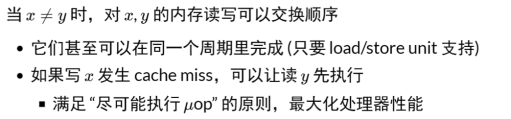
1 | # <-----------+ |
- 在多处理器上的表现
- 两个处理器分别看到y=0和x=0
宽松内存模型 (Relaxed/Weak Memory Model)
宽松内存模型的目的是使单处理器的执行更高效。
x86 已经是市面上能买到的 “最强” 的内存模型了 😂
- 这也是 Intel 自己给自己加的包袱
- 看看 ARM/RISC-V 吧，根本就是个分布式系统
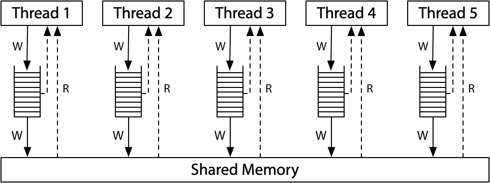(x86-TSO in Hardware memory models by Russ Cox)
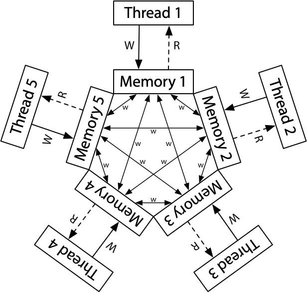ARM/RISC-V
so，老老实实地用lock和unlock。
并发2_并发控制基础_2023.3.9
互斥问题
并发编程：从入门到放弃
人类是 sequential creature
- 编译优化 + weak memory model 导致难以理解的并发执行
- 有多难理解呢？
人类是 (不轻言放弃的) sequential creature
- 有问题，就会试着去解决
- 手段：“回退到” 顺序执行
- 标记若干块代码，使得这些代码一定能按某个顺序执行
- 例如，我们可以安全地在块里记录执行的顺序
回退到顺序执行：互斥
插入 “神秘代码”，使得所有其他 “神秘代码” 都不能并发
- 由 “神秘代码” 领导不会并发的代码 (例如 pure functions) 执行
1 | void Tsum() { |
Stop the world 真的是可能的
- Java 有 “stop the world GC”
- 单个处理器可以关闭中断
- 多个处理器也可以发送核间中断
失败的尝试
1 | int locked = UNLOCK; |
和 “山寨支付宝” 完全一样的错误
- 并发程序不能保证 load + store 的原子性
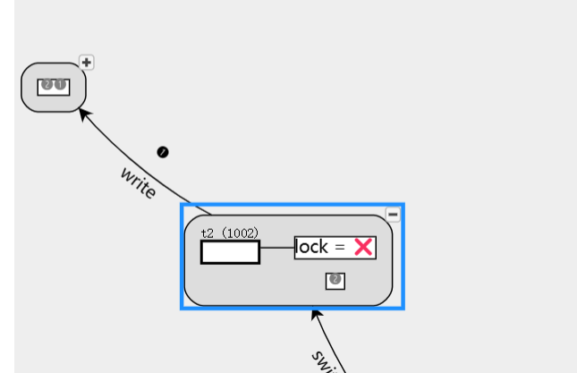出错
更严肃地尝试：确定假设、设计算法
假设：内存的读/写可以保证顺序、原子完成
```
val = atomic_load(ptr)1
2
3
4
5
6
- 对应往某个地方 “贴一张纸条” (必须闭眼盲贴)
- 贴完一瞬间就可能被别人覆盖
- ```
atomic_store(ptr, val)- 看一眼某个地方的字条 (只能看到瞬间的字)
- 刚看完就可能被改掉
对应于 model checker
- 每一行可以执行一次全局变量读或写
- 每个操作执行之后都发生
sys_sched()
正确性不明的奇怪尝试 (Peterson 算法)
A 和 B 争用厕所的包厢
想进入包厢之前，A/B 都首先举起自己的旗子
- A 往厕所门上贴上 “B 正在使用” 的标签
- B 往厕所门上贴上 “A 正在使用” 的标签
然后，
如果对方举着旗，且门上的名字是对方
，等待
- 否则可以进入包厢
出包厢后，放下自己的旗子 (完全不管门上的标签)
习题：证明 Peterson 算法正确，或给出反例
进入临界区的情况
- 如果只有一个人举旗，他就可以直接进入
- 如果两个人同时举旗，由厕所门上的标签决定谁进
- 手快 🈶️ (被另一个人的标签覆盖)、手慢 🈚
一些具体的细节情况
- A 看到 B 没有举旗
- B 一定不在临界区
- 或者 B 想进但还没来得及把 “A 正在使用” 贴在门上
- A 看到 B 举旗子
- A 一定已经把旗子举起来了
- (!@^#&!%^(&^!@%#
绕来绕去很容易有错漏的情况
Prove by brute-force
- 枚举状态机的全部状态(P**C1,P**C2,x,y,tur**n)
- 但手写还是很容易错啊——可执行的状态机模型有用了！
1 | void TA() { while (1) { |
模型、模型检验与现实
“Push-button” Verification 🎖
我们 (在完全不理解算法的前提下) 证明了 Sequential 内存模型下 Peterson’s Protocol 的 Safety。它能够实现互斥。
并发编程比大家想象得困难
- 感受一下 Dekker’s Algorithm
- “Myths about the mutual exclusion problem” (IPL, 1981)
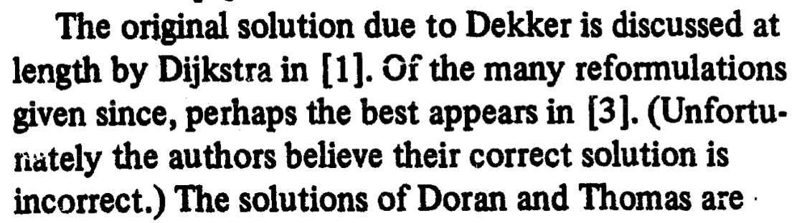
自动遍历状态空间的乐趣
可以帮助我们快速回答更多问题
- 如果结束后把门上的字条撕掉，算法还正确吗？
- 在放下旗子之前撕
- 在放下旗子之后撕
- 如果先贴标签再举旗，算法还正确吗？
- 我们有两个 “查看” 的操作
- 看对方的旗有没有举起来
- 看门上的贴纸是不是自己
- 这两个操作的顺序影响算法的正确性吗？
- 是否存在 “两个人谁都无法进入临界区” (liveness)、“对某一方不公平” (fairness) 等行为？
- 都转换成图 (状态空间) 上的遍历问题了！
peterson.py
1 | def T1(): |
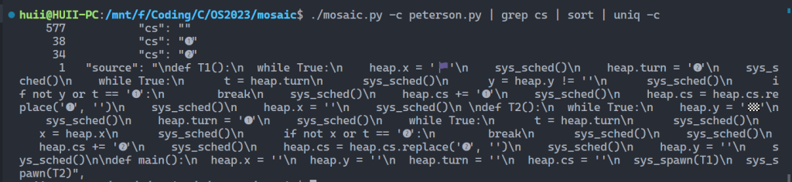验证了正确性
从模型回到现实……
回到我们的假设 (体现在模型)
- Atomic load & store
- 读/写单个全局变量是 “原子不可分割” 的
- 但这个假设在现代多处理器上并不成立
- 所以实际上按照模型直接写 Peterson 算法应该是错的？
“实现正确的 Peterson 算法” 是合理需求，它一定能实现
Compiler barrier/volatile 保证不被优化的前提下
处理器提供特殊指令保证可见性
编译器提供
1
__sync_synchronize()
函数
- x86:
mfence; ARM:dmb ish; RISC-V:fence rw, rw - 同时含有一个 compiler barrier
- x86:
peterson.c
1 | #include "thread.h" |
如果把第六行的BARRIER定义为空，则会出错
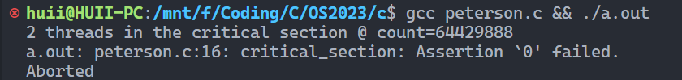出错
原子指令
并发编程困难的解决
普通的变量读写在编译器 + 处理器的双重优化下行为变得复杂
1 | retry: |
解决方法：编译器和硬件共同提供不可优化、不可打断的指令
- “原子指令” + compiler barrier
实现正确的求和
1 | for (int i = 0; i < N; i++) |
“Bus lock”——从 80386 开始引入 (bus control signal)
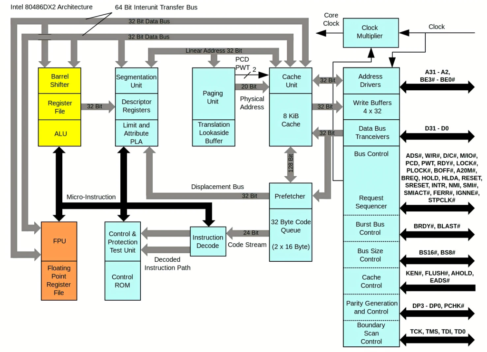
sum-atomic.c
1 | #include "thread.h" |
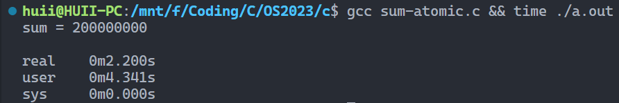正确结果，但是很慢
编译器和硬件的协作
Acquire/release semantics
对于一对配对的 release-acquire
- (逻辑上) release 之前的 store 都对 acquire 之后的 load 可见
- Making Sense of Acquire-Release Semantics
std::atomic
std::memory_order_acquire: guarantees that subsequent loads are not moved before the current load or any preceding loads.
std::memory_order_release: preceding stores are not moved past the current store or any subsequent stores.
x.load()/x.store()会根据 memory order 插入 fencex.fetch_add()将会保证 cst (sequentially consistent)
- 去 godbolt 上试一下吧
并发3_并发控制：互斥_2023.3.14
互斥问题：定义与假设
互斥问题：定义
互斥 (mutual exclusion)，“互相排斥”
- 实现
lock_t数据结构和lock/unlockAPI:
1 | typedef struct { |
一把 “排他性” 的锁——对于锁对象 lk
- 如果某个线程持有锁，则其他线程的
lock不能返回 (Safety) - 在多个线程执行
lock时，至少有一个可以返回 (Liveness) - 能正确处理处理器乱序、宽松内存模型和编译优化
互斥问题的经典算法
Peterson 算法
- 包间、旗子和门上的字条
- 假设 atomic load/store
- 实现这个假设也不是非常容易的 (peterson.c)
因此，假设很重要
- 不能同时读/写共享内存 (1960s) 不是一个好的假设
- Load (环顾四周) 的时候不能写，“看一眼就把眼睛闭上”
- Store (改变物理世界状态) 的时候不能读，“闭着眼睛动手”
- 这是《操作系统>课
- 更喜欢直观、简单、粗暴 (稳定)、有效的解决方法
实现互斥的基本假设
允许使用使我们可以不管一切麻烦事的原子指令
1 | void atomic_inc(long *ptr); |
看起来是一个普通的函数，但假设：
- 包含一个原子指令
- 指令的执行不能被打断
- 包含一个 compiler barrier
- 无论何种优化都不可越过此函数
- 包含一个 memory fence
- 保证处理器在 stop-the-world 前所有对内存的 store 都 “生效”
- 即对 resume-the-world 之后的 load 可见
对未来可见：release；读到过去的内容：acquire。共同组成锁。
Atomic Exchange 实现
1 | int xchg(int volatile *ptr, int newval) { |
自旋锁 (Spin Lock)
自旋锁 (Spin Lock)
1 | void lock(lock_t *lk); |
做题家：拿到题就开始排列组合
- 熟练得让人心疼
- 如果长久的训练都是 “必须在规定的时间内正确解出问题”，那么浪费时间的思考自然就少了
科学家：考虑更多更根本的问题
- 我们可以设计出怎样的原子指令？
- 它们的表达能力如何？
- 计算机硬件可以提供比 “一次 load/store” 更强的原子性吗？
- 如果硬件很困难，软件/编译器可以么？
自旋锁：用 xchg 实现互斥
在厕所门口放一个桌子 (共享变量)
- 初始时放着 🔑
自旋锁 (Spin Lock)
- 想上厕所的同学 (一条 xchg 指令)
- Stop the world
- 看一眼桌子上有什么 (🔑 或 🔞)
- 把 🔞 放到桌上 (覆盖之前有的任何东西)
- Resume the world
- 期间看到 🔑 才可以进厕所，否则重复
- 出厕所的同学
- 把 🔑 放到桌上
实现互斥：自旋锁
1 | int table = YES; |
在 xchg 的假设下简化实现
- 包含一个原子指令
- 包含一个 compiler barrier
- 包含一个 memory fence
- sum-spinlock demo
1 | int locked = 0; |
sum-spinlock.c
1 | #include "thread.h" |
结果sum = 200000000
更强大的原子指令
更强大的原子指令
Compare and exchange (“test and set”)
Compare and exchange (“test and set”)
- (lock) cmpxchg SRC, DEST
1 | TEMP = DEST |
- 🤔 看起来没复杂多少，好像又复杂了很多
- 学编程/操作系统 “纸面理解” 是不行的
- 一定要写代码加深印象
- 对于这个例子：我们可以列出 “真值表”
在自旋锁中代替 xchg
在自旋锁中代替 xchg
1 | // cmpxchg(old='🔑', new='🔞', *ptr) |
- 这么做有什么好处吗？
- 有的，在自旋失败的时候减少了一次 store
- 当然，现代处理器也可以优化 xchg
多出的 Compare: 用处
同时检查上一次获得的值是否仍然有效 + 修改生效
1 | // Create a new node |
在操作系统上实现互斥
自旋锁的缺陷
性能问题 (1)
- 除了进入临界区的线程，其他处理器上的线程都在空转
- 争抢锁的处理器越多，利用率越低
- 4 个 CPU 运行 4 个 sum-spinlock 和 1 个 OBS
- 任意时刻都只有一个 sum-atomic 在有效计算
- 均分 CPU, OBS 就分不到 100% 的 CPU 了
- 4 个 CPU 运行 4 个 sum-spinlock 和 1 个 OBS
性能问题 (2)
- 持有自旋锁的线程可能被操作系统切换出去
- 操作系统不 “感知” 线程在做什么
- (但为什么不能呢？)
- 实现 100% 的资源浪费
Scalability: 性能的新维度
同一份计算任务，时间 (CPU cycles) 和空间 (mapped memory) 会随处理器数量的增长而变化。

用自旋锁实现 sum++ 的性能问题
- 严谨的统计很难
- CPU 动态功耗
- 系统中的其他进程
- 超线程
- NUMA
- ……
- Benchmarking crimes
自旋锁的使用场景
- 临界区几乎不 “拥堵”
- 持有自旋锁时禁止执行流切换
使用场景：操作系统内核的并发数据结构 (短临界区)
- 操作系统可以关闭中断和抢占
- 保证锁的持有者在很短的时间内可以释放锁
- (如果是虚拟机呢…😂)
- PAUSE 指令会触发 VM Exit
- 但依旧很难做好
实现线程 + 长临界区的互斥
“让” 不是 C 语言代码可以做到的 (C 代码只能执行指令)
但有一种特殊的指令：syscall
把锁的实现放到操作系统里就好啦
```
syscall(SYSCALL_lock, &lk);1
2
3
4
5
- 试图获得 `lk`，但如果失败，就切换到其他线程
- ```
syscall(SYSCALL_unlock, &lk);- 释放
lk，如果有等待锁的线程就唤醒
- 释放
操作系统 = 更衣室管理员
- 先到的人 (线程)
- 成功获得手环，进入游泳馆
*lk = 🔒，系统调用直接返回
- 后到的人 (线程)
- 不能进入游泳馆，排队等待
- 线程放入等待队列，执行线程切换 (yield)
- 洗完澡出来的人 (线程)
- 交还手环给管理员；管理员把手环再交给排队的人
- 如果等待队列不空，从等待队列中取出一个线程允许执行
- 如果等待队列为空，
*lk = ✅
- 管理员 (OS) 使用自旋锁确保自己处理手环的过程是原子的
并发4_并发控制：调试理论与实践_2023.3.16
调试理论
调试理论：如果我们能判定任意程序状态的正确性，那么给定一个 failure，我们可以通过二分查找定位到第一个 error 的状态，此时的代码就是 fault (bug)。
实际中的调试：观察状态机执行 (trace) 的某个侧面
- 缩小错误状态 (error) 可能产生的位置
- 作出适当的假设
- 再进行细粒度的定位和诊断
最重要的两个工具
- printf → 自定义 log 的 trace
- 灵活可控、能快速定位问题大概位置、适用于大型软件
- 无法精确定位、大量的 logs 管理起来比较麻烦
- gdb → 指令/语句级 trace
- 精确、指令级定位、任意查看程序内部状态
- 耗费大量时间
使用 GDB 调试程序
GDB: 入门
GDB: 最常用的命令在 gdb cheat sheet
- 打印贴在电脑前，调试时候看一遍，很快就大致记住了
想要更好的体验？
- GDB 本身也是一个编程语言
- 它甚至支持 Python
- 我们可以执行一些初始化代码 (-x)
- 库函数也是代码
- directory 命令增加源码路径
- GDB 有许多前端
- cgdb, pwndbg, vscode, …
- RTFM - M 比 ChatGPT 好用在于它不需要 prompt 且全面
musl
🌶️ Futex: Fast Userspace muTexes (cont’d)
一个简单的设计：先在用户空间自旋
- 如果获得锁，直接进入 (Fast Path，无系统调用)
- 未能获得锁，系统调用 (Slow Path)
- 解锁后用系统调用唤醒潜在的 Slow Path 线程
- 更好的设计可以彻底消除 fast-path 的系统调用
RTFM (劝退)
- futex (7), futex (2)
- A futex overview and update (LWN)
- Futexes are tricky (论 model checker 的重要性)
- (我们不讲并发算法)
- 但我们可以调试它的实现
调试理论：应用
调试理论：应用 (Again)
需求 → 设计 → 代码 → Fault → Error → Failure
“Technical Debt”
每当你写出不好维护的代码，你都在给你未来的调试/需求变更挖坑。
中枪了？
- 为了快点跑程序，随便写的 klib
- 为了赶紧实现指令，随手写的代码
- 为了应付老板，随便写的系统实现
- jyy 的 code review:
日常血压升高时间
- jyy 的 code review:
编程基本准则：回顾
Programs are meant to be read by humans (AIs) and only incidentally for computers to execute. — D. E. Knuth
(程序首先是拿给人读的，其次才是被机器执行。)
好的程序
不言自明：能知道是做什么的 (
specification
)
- 因此代码风格很重要
不言自证：能确认代码和 specification 一致
- 因此代码中的逻辑流很重要
人类新纪元的评判标准
- AI 是否能正确理解/维护你的代码
调试理论的最重要应用
写好读、易验证的代码
在代码中添加更多的断言 (assertions)
断言的意义
- 把代码中隐藏的 specification 写出来
- Fault → Error (靠测试)
- Error → Failure (靠断言)
- Error 暴露的越晚，越难调试
- 追溯导致 assert failure 的变量值 (slice) 通常可以快速定位到 bug
并发5_并发控制：同步 (1)_2023.3.21
同步问题
同步 (Synchronization)
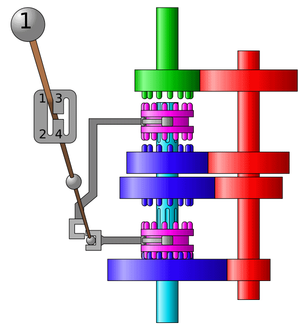
两个或两个以上随时间变化的量在变化过程中保持一定的相对关系
- 同步电路 (一个时钟控制所有触发器)
- iPhone/iCloud 同步 (手机 vs 电脑 vs 云端)
- 变速箱同步器 (合并快慢速齿轮)
- 同步电机 (转子与磁场转速一致)
- 同步电路 (所有触发器在边沿同时触发)
异步 (Asynchronous) = 不需要同步
- 上述很多例子都有异步版本 (异步电机、异步电路、异步线程)
生产者-消费者问题：学废你就赢了
99% 的实际并发问题都可以用生产者-消费者解决。
1 | void Tproduce() { while (1) printf("("); } |
在 printf 前后增加代码，使得打印的括号序列满足
一定是某个合法括号序列的前缀
括号嵌套的深度不超过
n
- n=3,
((())())(((合法 - n=3,
(((()))),(()))不合法
- n=3,
生产者-消费者问题中的同步
- Tproduce: 等到有空位时才能打印左括号
- Tconsume: 等到有多余的左括号时才能打印右括号
计算图、调度器和生产者-消费者问题
为什么叫 “生产者-消费者” 而不是 “括号问题”？
- 左括号：生产资源 (任务)、放入队列
- 右括号：从队列取出资源 (任务) 执行
并行计算基础：计算图
- 计算任务构成有向无环图
- (u,v)∈E 表示 v 要用到前u 的值
- 只要调度器 (生产者) 分配任务效率够高，算法就能并行
- 生产者把任务放入队列中
- 消费者 (workers) 从队列中取出任务
生产者-消费者：实现
能否用互斥锁实现括号问题？
- 左括号：嵌套深度 (队列) 不足 n 时才能打印
- 右括号：嵌套深度 (队列) >1>1 时才能打印
- 当然是等到满足条件时再打印了 (代码演示)
- 用互斥锁保持条件成立
- 当然是等到满足条件时再打印了 (代码演示)
并发：小心！
- 压力测试 + 观察输出结果
- 自动观察输出结果：pc-check.py
- 未来：copilot 观察输出结果，并给出修复建议
更远的未来：
我们都不需要不存在了pc-mutex.c
1 | #include "thread.h" |
thread-sync.h
1 | #include <semaphore.h> |
条件变量
同步问题：分析
线程同步由条件不成立等待和同步条件达成继续构成
线程 join
- Tmain 同步条件：
nexit == T - Tmain 达成同步：最后一个线程退出
nexit++
生产者/消费者问题
- Tproduce 同步条件：
CAN_PRODUCE (count < n) - Tproduce 达成同步：Tconsume
count-- - Tconsume 同步条件：
CAN_CONSUME (count > 0) - Tconsume 达成同步：Tproduce
count++
条件变量：理想与实现之间的折衷
一把互斥锁 + 一个 “条件变量” + 手工唤醒
- wait(cv, mutex) 💤
- 调用时必须保证已经获得 mutex
- wait 释放 mutex、进入睡眠状态
- 被唤醒后需要重新执行 lock(mutex)
- signal/notify(cv) 💬
- 随机私信一个等待者：醒醒
- 如果有线程正在等待 cv，则唤醒其中一个线程
- broadcast/notifyAll(cv) 📣
- 叫醒所有人
- 唤醒全部正在等待 cv 的线程
条件变量：应用
条件变量：万能并行计算框架 (M2)
1 | struct work { |
fish.c
1 | #include "thread.h" |